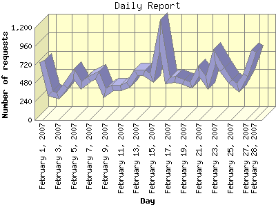

Report generated by Analog 6.0 and Report Magic 2.21
|
Web Server Statistics for "Harish Narayanan (hnarayan) - February 2007" Report generated by Analog 6.0 and Report Magic 2.21 |
The Daily Report identifies the activity for each day within the reporting period. Remember that one page hit can result in several server requests as the images for each page are loaded.

| Day | Number of requests | Number of bytes transferred | Percentage of the bytes | Percentage of the requests | |
|---|---|---|---|---|---|
| 1. | February 1, 2007 | 765 | 140.110 MB | 11.76% | 4.92% |
| 2. | February 2, 2007 | 353 | 55.917 MB | 4.69% | 2.27% |
| 3. | February 3, 2007 | 313 | 55.545 MB | 4.66% | 2.01% |
| 4. | February 4, 2007 | 443 | 47.190 MB | 3.96% | 2.85% |
| 5. | February 5, 2007 | 601 | 140.660 MB | 11.80% | 3.87% |
| 6. | February 6, 2007 | 450 | 26.916 MB | 2.26% | 2.89% |
| 7. | February 7, 2007 | 527 | 27.810 MB | 2.33% | 3.39% |
| 8. | February 8, 2007 | 585 | 23.772 MB | 1.99% | 3.76% |
| 9. | February 9, 2007 | 347 | 28.436 MB | 2.39% | 2.23% |
| 10. | February 10, 2007 | 420 | 17.344 MB | 1.46% | 2.70% |
| 11. | February 11, 2007 | 418 | 19.250 MB | 1.61% | 2.69% |
| 12. | February 12, 2007 | 459 | 25.537 MB | 2.14% | 2.95% |
| 13. | February 13, 2007 | 618 | 24.551 MB | 2.06% | 3.98% |
| 14. | February 14, 2007 | 614 | 33.505 MB | 2.81% | 3.95% |
| 15. | February 15, 2007 | 549 | 10.956 MB | 0.92% | 3.53% |
| 16. | February 16, 2007 | 1,103 | 33.068 MB | 2.77% | 7.09% |
| 17. | February 17, 2007 | 513 | 56.997 MB | 4.78% | 3.30% |
| 18. | February 18, 2007 | 526 | 26.377 MB | 2.21% | 3.38% |
| 19. | February 19, 2007 | 490 | 31.760 MB | 2.67% | 3.15% |
| 20. | February 20, 2007 | 459 | 22.969 MB | 1.93% | 2.95% |
| 21. | February 21, 2007 | 633 | 44.094 MB | 3.70% | 4.07% |
| 22. | February 22, 2007 | 488 | 42.584 MB | 3.57% | 3.14% |
| 23. | February 23, 2007 | 820 | 34.079 MB | 2.86% | 5.27% |
| 24. | February 24, 2007 | 656 | 23.974 MB | 2.01% | 4.22% |
| 25. | February 25, 2007 | 502 | 14.187 MB | 1.19% | 3.23% |
| 26. | February 26, 2007 | 423 | 56.074 MB | 4.71% | 2.72% |
| 27. | February 27, 2007 | 578 | 39.154 MB | 3.29% | 3.72% |
| 28. | February 28, 2007 | 895 | 89.072 MB | 7.47% | 5.76% |
Most active day February 16, 2007 : 384 pages sent. 1,103 requests handled. 34,674,171.00 served.
Daily average: 555 requests handled. 42.568 MB served.
This report was generated on March 6, 2007 18:40.
Report time frame February 1, 2007 00:06 to February 28, 2007 23:53.
| Web statistics report produced by: | |
 Analog 6.0 Analog 6.0 |  Report Magic 2.21 Report Magic 2.21 |